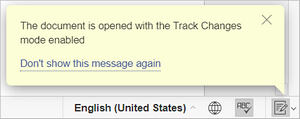
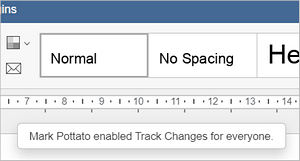
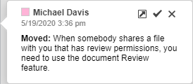
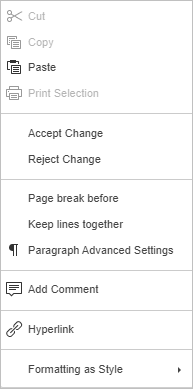

Pregled dokumenata
Uređivač dokumenata omogućava vam da održite jedinstven timski pristup radu: delite fajlove i foldere, saradnički uređujete dokumente u realnom vremenu, komunicirate direktno u uređivaču, komentarišete određene delove dokumenata koji zahtevaju dodatni uvid, čuvate verzije dokumenata za buduću upotrebu, upoređujete i spajate dokumente radi lakše obrade i uređivanja.
Kada vam neko podeli fajl sa dozvolom za pregled, potrebno je da primenite opciju Pregled.
U Uređivaču dokumenata, kao recenzent, možete koristiti opciju Pregled da pregledate dokument, menjate rečenice, fraze i druge elemente stranice, ispravljate pravopis itd., a da ga zapravo ne uređujete. Sve vaše izmene biće zabeležene i prikazane osobi koja vam je poslala dokument.
Ako vi pošaljete fajl na pregled, potrebno je da prikažete sve izmene koje su napravljene, pregledate ih i prihvatite ili odbijete.
Omogućavanje funkcije Praćenje izmena
Da biste videli izmene koje je predložio recenzent, omogućite opciju Praćenje izmena na jedan od sledećih načina:
- kliknite na dugme u donjem desnom uglu statusne trake, ili
-
pređite na karticu Saradnja u gornjoj alatnoj traci i pritisnite dugme Praćenje izmena.
Nije potrebno da recenzent omogući opciju Praćenje izmena. Ona je podrazumevano omogućena i ne može se isključiti kada je dokument podeljen sa pravima pristupa Samo pregled.
-
u otvorenom iskačućem meniju dostupne su sledeće opcije:
- Uključeno za mene – praćenje izmena je omogućeno samo za trenutnog korisnika. Opcija ostaje uključena tokom tekuće sesije uređivanja, tj. biće isključena kada ponovo učitate ili otvorite dokument. Ne zavisi od drugih korisnika.
- Isključeno za mene – praćenje izmena je isključeno samo za trenutnog korisnika. Opcija ostaje isključena tokom tekuće sesije i ne zavisi od drugih korisnika.
-
Uključeno za mene i sve – praćenje izmena je omogućeno i ostaće uključeno čak i kada ponovo učitate ili otvorite dokument (svi korisnici će imati praćenje omogućeno). Ako drugi korisnik isključi opšte praćenje izmena, opcija će biti prebačena na Isključeno za mene i sve za sve korisnike.

-
Isključeno za mene i sve – praćenje izmena je isključeno i ostaće isključeno čak i kada ponovo učitate ili otvorite dokument (svi korisnici će imati praćenje isključeno). Ako drugi korisnik omogući praćenje, opcija će se automatski promeniti na Uključeno za mene i sve. Svakom koautoru biće prikazana odgovarajuća poruka.

Pregled izmena
Izmene koje napravi korisnik označene su posebnom bojom u tekstu dokumenta. Kada kliknete na izmenjeni tekst, otvara se oblačić koji prikazuje korisničko ime, datum i vreme izmene, kao i njen opis. Oblačić sadrži i ikone za prihvatanje ili odbijanje izmene.

Ako prevučete i otpustite deo teksta na drugo mesto u dokumentu, tekst na novoj poziciji biće podvučen duplom linijom. Tekst na originalnoj poziciji biće precrtan duplom linijom. To se računa kao jedna izmena.
Kliknite na dvostruko precrtani tekst na originalnoj poziciji i koristite strelicu u oblačiću da pređete na novu lokaciju teksta.
Kliknite na dvostruko podvučeni tekst na novoj poziciji i koristite strelicu u oblačiću da pređete na originalnu lokaciju.
Izbor režima prikaza izmena
Kliknite na dugme Režim prikaza u gornjoj alatnoj traci i odaberite jedan od dostupnih režima sa liste:
- Označeno i u oblačićima – ova opcija je podrazumevano izabrana. Omogućava istovremeno pregled predloženih izmena i uređivanje dokumenta. Izmene su označene u tekstu i prikazane u oblačićima.
- Samo označeno – ovaj režim omogućava pregled predloženih izmena i uređivanje dokumenta, ali su izmene prikazane samo u tekstu, dok su oblačići sakriveni.
- Konačno – prikazuje sve izmene kao da su prihvaćene. Ova opcija ne prihvata stvarno sve izmene, već omogućava da vidite kako će dokument izgledati nakon prihvatanja. U ovom režimu ne možete uređivati dokument.
- Original – prikazuje sve izmene kao da su odbijene. Ova opcija ne odbacuje stvarno izmene, već samo omogućava pregled dokumenta bez izmena. U ovom režimu ne možete uređivati dokument.
Prihvatanje ili odbijanje izmena
Koristite dugmad Prethodno i Sledeće u gornjoj alatnoj traci da se krećete kroz izmene.
Da biste prihvatili trenutno izabranu izmenu, možete:
- kliknuti na dugme Prihvati u gornjoj alatnoj traci, ili
- kliknuti na strelicu ispod dugmeta Prihvati i izabrati opciju Prihvati trenutnu izmenu (u tom slučaju izmena će biti prihvaćena, a vi ćete preći na sledeću dostupnu izmenu prema poziciji kursora), ili
- kliknuti na dugme Prihvati u oblačiću izmene.
Prihvatanje ili odbijanje izmene vodi vas na sledeću izmenu prema poziciji kursora.
Da biste brzo prihvatili sve izmene, kliknite na strelicu ispod dugmeta Prihvati i izaberite opciju Prihvati sve izmene.
Da biste odbili trenutnu izmenu, možete:
- kliknuti na dugme Odbij u gornjoj alatnoj traci, ili
- kliknuti na strelicu ispod dugmeta Odbij i izabrati opciju Odbij trenutnu izmenu (u tom slučaju izmena će biti odbačena, a vi ćete preći na sledeću dostupnu izmenu prema poziciji kursora), ili
- kliknuti na dugme Odbij u oblačiću izmene.
Da biste brzo odbili sve izmene, kliknite na strelicu ispod dugmeta Odbij i izaberite opciju Odbij sve izmene.
Ako treba da prihvatite ili odbijete samo jednu izmenu, kliknite desnim tasterom miša i izaberite Prihvati izmenu ili Odbij izmenu iz kontekstualnog menija.

Ako pregledate dokument, opcije Prihvati i Odbij nisu dostupne za vas. Možete obrisati svoje izmene pomoću ikone u oblačiću izmene.